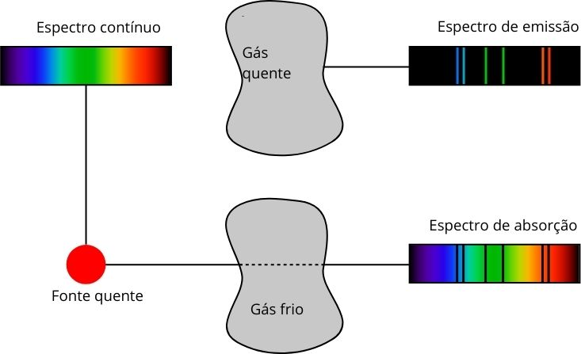
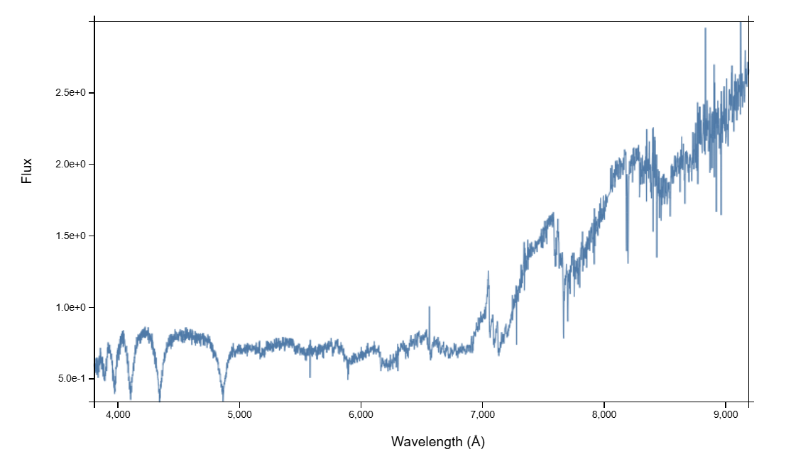
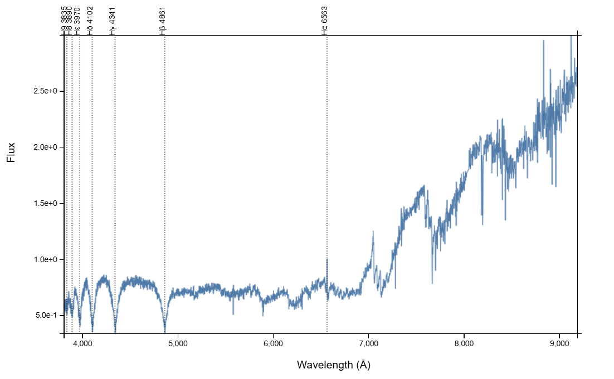
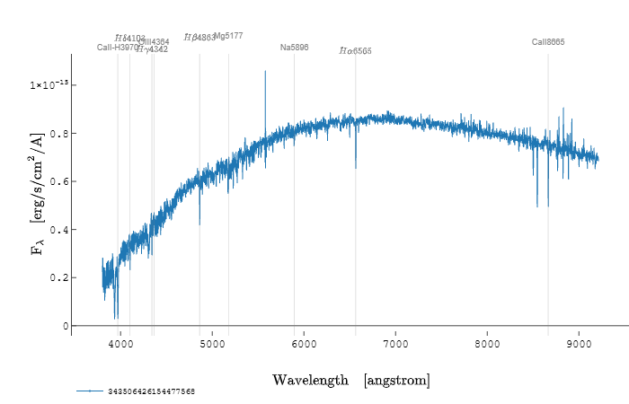

Use o simulador acima para encontrar o comprimento de onda máximo (λmax) de diferentes classes de estrelas e anote na tabela abaixo para calcular suas temperaturas.
📋 Instruções:
Use o simulador acima para encontrar o λmax para cada classe espectral.
Observe o gráfico: Para cada classe, qual é a cor predominante que a estrela emite na faixa visível (entre 400 e 700 nm)? Onde a curva de intensidade é mais alta nessa faixa? Anote a cor (ex: "Azul", "Branco-azulado", "Branco", "Amarelo", "Laranja", "Vermelho").
Preencha a tabela abaixo. Calcule a temperatura a partir da Lei de Wien.
Ao final, responda à pergunta de conclusão.
🧮 Clique para ver a explicação e um Exemplo de Cálculo
A Fórmula da Lei de Wien
T =
b
λmax
T = Temperatura (em Kelvin)
λmax = Comprimento de onda do pico (em metros)
b = 2.898 × 10-3 m·K (Constante de Wien)
⚠️ Lembre-se de converter:
1 nm = 1 × 10-9 m.
Exemplo de Cálculo:
Para o Sol (Classe G), o pico é λmax ≈ 500 nm.
1. Converter nm para metros: 500 × 10-9 m
2. Calcular: T = (2.898 × 10-3) / (500 × 10-9)
3. Resultado: T ≈ 5796 K
Classe Espectral
λmax (nm)
Sua Temperatura (K)
Cor Predominante
Ação
Observações feitas: 0/6
✅ Gabarito da Atividade
Parabéns! Confira seus cálculos abaixo:
λmax Anotado
Sua Temp. (K)
Temp. Correta (K)
Erro (%)
Conclusão
Baseado nos dados que você coletou na tabela, qual é a relação entre a temperatura de uma estrela e a cor que ela emite? Sua conclusão é diferente do que o senso comum nos diz sobre as cores azul e vermelho para frio e quente?
Atlas Espectral: Impressões Digitais dos Elementos
Este é um atlas de referência que mostra as 'impressões digitais' (linhas de absorção) dos principais elementos encontrados em estrelas.
Carregando Atlas...
Atividade de Anotação
Agora que você observou os espectros, anote na tabela abaixo os comprimentos de onda (em nm) que você identificou. Preencha cada coluna 'Linha' com um único valor.
Use a última coluna para adicionar comentários e observações sobre as características das linhas (ex: largas, finas, muito próximas, etc.).
Elemento
Linha 1
Linha 2
Linha 3
Linha 4
Linha 5
Observações / Comentários
Modelo Simples de Espectro de Absorção
📚 Clique aqui para entender por que os espectros das estrelas têm "vales" (Leis de Kirchhoff)
Na Etapa 1, vimos o espectro ideal de uma estrela, a curva suave da radiação de corpo negro. No entanto, quando olhamos para uma estrela real, o espectro que vemos não é assim tão perfeito. Ele é cheio de "vales" ou linhas escuras, como você pode ver no simulador abaixo. Mas o que são esses vales?
Por que o Espectro de uma Estrela não é Ideal?
Imagine que o núcleo denso de uma estrela produz uma luz intensa e contínua, como uma lâmpada incandescente. Esse seria o espectro de corpo negro perfeito, um arco-íris completo e sem falhas.
Porém, essa luz precisa atravessar a atmosfera mais externa e mais fria da estrela para chegar até nós. Nessa atmosfera, existem átomos de vários elementos químicos (hidrogênio, hélio, cálcio, etc.). Cada tipo de átomo é "sintonizado" para absorver comprimentos de onda (cores) muito específicos de luz.
Quando a luz contínua do núcleo passa pela atmosfera, os átomos "roubam" exatamente a energia que eles gostam de absorver. O resultado é que, no espectro que chega à Terra, faltam essas cores específicas. Esses "vales" são as linhas de absorção. Eles são as impressões digitais dos elementos presentes na atmosfera da estrela.
As Leis de Kirchhoff e os 3 Tipos de Espectros
No século XIX, o físico Gustav Kirchhoff formulou três leis que descrevem perfeitamente como esses espectros são formados:

Fonte: Adaptado de Wikimedia Commons
1. Espectro Contínuo: O que é: Um espectro completo e ininterrupto. Como se forma: É produzido por um objeto denso e quente, como o núcleo de uma estrela ou o filamento de uma lâmpada incandescente. A luz é emitida em todos os comprimentos de onda. (Lei 1 de Kirchhoff)
2. Espectro de Emissão: O que é: Apenas algumas linhas coloridas brilhantes sobre um fundo preto. Como se forma: É produzido por um gás quente de baixa densidade. O gás não emite um espectro contínuo, mas apenas energias (correspondente a comprimento de onda) específicas que seus átomos são capazes de emitir. É o oposto do espectro de absorção. (Lei 2 de Kirchhoff)
3. Espectro de Absorção: O que é: Um espectro contínuo com linhas escuras (vales). Como se forma: É produzido quando a luz de uma fonte quente e contínua passa por um gás mais frio e de baixa densidade (como a atmosfera de uma estrela). O gás frio absorve as mesmas energias que emitiria se estivesse quente. (Lei 3 de Kirchhoff)
Volte para Etapa 2 e observe o espectro de absorção de alguns elementos químicos.
Conclusão: O espectro de uma estrela é um espectro de absorção porque estamos vendo a luz contínua do seu núcleo denso depois que ela foi 'filtrada' pela sua atmosfera mais fria.
💡 O que significa 'Gravidade (log g)'?
O termo log(g) refere-se à gravidade na superfície da estrela, que está diretamente relacionada à pressão em sua atmosfera.
'g' é a aceleração da gravidade na superfície. Ela depende tanto da massa da estrela quanto do seu raio.
'log' é a escala logarítmica, usada para facilitar o trabalho com a vasta gama de valores de gravidade encontrados no universo.
A relação chave é: estrelas com raio pequeno e alta densidade (como anãs) têm alta gravidade superficial (log g alto). Estrelas com raio muito grande (como as gigantes e supergigantes), mesmo que sejam muito massivas, têm uma atmosfera expandida e, portanto, baixa gravidade superficial (log g baixo).
Efeito no Espectro: Uma gravidade maior (log g alto) comprime a atmosfera estelar, causando mais colisões entre os átomos. Essa "pressão" alarga as linhas de absorção. Portanto, estrelas gigantes (log g baixo) têm linhas espectrais finas e nítidas, enquanto estrelas anãs (log g alto) têm linhas mais largas.
Classe Espectral:G
Placa Fotográfica de Absorção. As linhas escuras correspondem aos vales no gráfico acima (linhas de absorção de energia do átomo)
Atividade de identificação de átomos e composto em espectro de absorção
Use os controles abaixo para gerar espectros de estrelas com diferentes temperaturas. O gráfico de cima mostra a curva de corpo negro e o de baixo mostra as linhas de absorção que apareceriam.
Teff:5777 Klog(g):4.44Classe:G
Missão: Decifrando o espectro na faixa do visível
Seu objetivo: Agir como um(a) astrofísico(a) e identificar quais elementos químicos deixam suas "impressões digitais" em estrelas de diferentes temperaturas.
Instruções:
Use os sliders acima para escolher uma temperatura (ou use as temperaturas que você investigou na Etapa 1 para cada classe espectral).
Observe atentamente o gráfico normalizado "2. Linhas de Absorção".
Consulte o "Etapa 2: Atlas Espectral" (e seus dados) para comparar as posições dos "vales" (linhas de absorção) com as linhas de referência de cada elemento.
Preencha a tabela abaixo com suas descobertas. Adicione uma nova linha para cada classe espectral que você analisar.
Classe / Temp (K)
Elementos Identificados
Intensidade (ordem decrescente)
Observações / Comentários
Ação
Análises feitas: 0/6
Perguntas para Análise
A revolução de uma cientista: Descoberta, Gênero e Poder
A Crença Antiga: Um universo com a nossa Cara
Até a década de 1920, a visão predominante, defendida por influentes da área como o astrofísico Henry Norris Russell, era de que as estrelas e a Terra tinham composições químicas semelhantes. A lógica era simples e baseada em observação direta e qualitativa: como as linhas espectrais de metais como Ferro (Fe) e Cálcio (Ca) eram as mais fortes no espectro do Sol, esses deveriam ser os elementos mais abundantes. Acreditava-se que a intensidade de uma linha era um indicativo direto da quantidade do elemento.
A Tese que mudou tudo
Em sua tese de doutorado em 1925, Cecilia Payne fez algo radical. Usando a recém-desenvolvida teoria quântica, ela construiu um método quantitativo para explicar as linhas espectrais. Sua análise matemática rigorosa a levou a uma conclusão que contrariava todo o conhecimento vigente:
Hidrogênio e Hélio não eram apenas presentes, mas sim os componentes esmagadoramente dominantes do universo. Em suas contas, o hidrogênio era mais de um milhão de vezes mais abundante que o ferro na atmosfera solar.
A intensidade de uma linha espectral não mede a abundância, mas sim as condições físicas (principalmente a temperatura) da atmosfera da estrela, que determinam se um átomo está no estado correto de excitação para absorver energia.
Por que as linhas "mentem"? Para um átomo absorver luz, seu elétron precisa estar em um nível de energia específico para poder "saltar" para um nível mais alto. A temperatura da estrela determina se os elétrons estão nesse estado ideal:
Em estrelas muito frias: Os átomos não têm energia suficiente para excitar seus elétrons para o nível correto. As linhas de absorção visíveis são fracas ou inexistentes.
Em estrelas muito quentes: A energia é tão alta que a maioria dos elétrons já foi arrancada dos átomos (ionização). Sobram poucos átomos no estado certo para absorver a radiação.
A inércia do conhecimento: O Confronto com o patriarcado e a autoridade
A descoberta de Payne foi tão revolucionária que foi recebida com enorme ceticismo. O próprio Russell, que era consultor de sua tese, a aconselhou a não publicar sua principal conclusão, escrevendo que era "claramente impossível" que o hidrogênio fosse tão abundante.
Payne enfrentava um sistema onde a autoridade científica era exclusivamente masculina. Desde seus tempos de estudante em Cambridge, ouviu de um diretor que "jamais seria uma astrônoma" e, em Harvard, mesmo realizando trabalho complexo, este era classificado como de "caráter feminino", com remuneração inferior. Pressionada por uma das figuras mais poderosas da astronomia mundial, ela cedeu e adicionou uma ressalva em sua tese, afirmando que sua descoberta sobre a abundância de hidrogênio e hélio era "quase certamente não real".
Quatro anos depois, usando uma metodologia diferente, o próprio Henry Norris Russell chegou à mesma conclusão que Payne. Seu artigo se tornou a referência na área, e por muito tempo ele foi creditado como o pioneiro da descoberta. Embora ele tenha citado o trabalho dela, não mencionou que ela havia chegado à resposta correta anos antes e fora dissuadida por ele.
Payne, em 1925, se tornou a primeira pessoa a conseguir o título de doutora em astronomia na Universidade de Harvard. Cecilia Payne continuou sua carreira em Harvard por mais de trinta anos, mas só foi oficialmente nomeada professora em 1956, tornando-se a primeira mulher a chefiar um departamento na universidade. Sua história é um lembrete poderoso de que a ciência não é uma busca puramente objetiva; ela é uma construção humana, influenciada por preconceitos, relações de poder e pela coragem daqueles que ousam desafiar a opressão.
Material de Apoio (para alunos e professores):
A história de como Cecilia Payne revolucionou nosso entendimento da composição do universo é fascinante e um marco na ciência. Para saber mais sobre seu trabalho e a física por trás da análise espectral, leia o artigo:
O papel de Cecilia Payne na determinação da composição estelar
Reflexão final
A trajetória de Cecilia Payne-Gaposchkin é um exemplo poderoso de como a ciência é uma construção humana, sujeita a preconceitos, mas também impulsionada pela coragem de pessoas marginalizadas e silenciadas.
Com base no que você leu, escreva uma reflexão sobre como os desafios de gênero e a pressão de cientistas estabelecidos impactaram não apenas a carreira de Cecilia, mas também o próprio avanço do conhecimento científico.
Reuna-se com os seus colegas e discuta os termos "caráter feminino" e "jamais seria uma astrônoma" no contexto do texto. O que esse tipo de atitude impacta na sociedade? Quais vozes/sujeitos estão em posição de poder, e em relação a quem?
Linha de referencia de espectro no visível
Marque os elementos abaixo para projetar suas linhas de referência sobre o espectro. Isso ajuda a identificar quais elementos estão causando os "vales" de absorção.
Marque os elementos para revelar suas posições:
Etapa 6: Análise de Espectros Reais
Bem-vindo(a) à fronteira da astrofísica moderna! Até agora, você trabalhou com um simulador idealizado, um ambiente controlado para aprender os conceitos fundamentais. Agora, vamos encarar o desafio que os astrofísicos(as) enfrentam todos os dias: analisar dados reais.
Grandes levantamentos de dados, como o Sloan Digital Sky Survey (SDSS) e bancos de dados especializados como o Montreal White Dwarf Database (MWDD), coletaram milhões de espectros de estrelas, galáxias e quasares. Este trabalho monumental nos permite entender a evolução do universo, a composição de estrelas distantes e até mesmo os restos de planetas que orbitaram estrelas mortas.
Ao olhar para os gráficos abaixo, você notará que eles parecem bem mais "desconfortáveis" e caóticos do que os do nosso simulador. Isso porque dados reais contêm ruído: flutuações aleatórias causadas pelo detector do telescópio, pela atmosfera da Terra ou por fontes de luz de fundo. Um pequeno "vale" pode ser uma linha de absorção real de um elemento químico ou apenas uma flutuação aleatória do ruído.
É aqui que entra a experiência do astrofísico: com estudo e técnicas de processamento de dados, ele aprende a diferenciar o sinal do ruído para, com confiança, identificar os elementos que compõem uma estrela.
ℹ️ Clique aqui para entender a unidade Angstrom (Å)
Nos gráficos profissionais, é comum usar Angstroms (Å) em vez de nanômetros (nm).
1 nm = 10 Å
Regra prática: Para converter de Angstrom para nanômetro, basta dividir por 10. Ex: 4000 Å = 400 nm.
Espectro de um Sistema Binário (2MASS J00035692-0503328)

🔍
Espectro real de uma binária.

🔍
🔍 Clique na imagem para ampliar Mesmo espectro, com as linhas identificadas.
Análise Profissional: A História de Duas Estrelas
Este espectro fascinante do sistema 2MASS J00035692-0503328 conta a história não de uma, mas de duas estrelas. A luz que vemos é a soma da contribuição de uma Anã Branca quente (Tipo DA) e uma Anã Vermelha fria (Tipo M). Vamos primeiro focar na estrela principal.
A Estrela Principal: A Anã Branca
A luz na parte azul do espectro é dominada pela Anã Branca, o núcleo denso que resta após uma estrela como o Sol morrer. Suas propriedades são extremas:
Temperatura Efetiva:~17.000 K (extremamente quente, quase três vezes a temperatura da superfície do Sol, que é ~5.800 K).
Massa:~0,66 M☉ (cerca de 66% da massa do nosso Sol).
Gravidade Superficial (log g):8,07 (o Sol tem um log(g) de ~4,44). Esse valor, dezenas de milhares de vezes maior que o do Sol, indica que a estrela é incrivelmente densa: imagine 66% da massa do Sol espremida em um objeto do tamanho da Terra!
Desafio Interativo: Com uma temperatura de 17.100 K, que cor você esperaria que essa estrela isolada tivesse? Volte para o simulador da Etapa 1, ajuste os parâmetros para essa temperatura e confirme se a cor branco-azulada faz sentido para uma estrela tão quente.
A Pista da Companheira escondida no Espectro
As linhas de absorção de Hidrogênio que vemos (Hα, Hβ, etc.) pertencem à Anã Branca. Note como elas são extremamente largas – isso é um efeito direto da imensa pressão em sua atmosfera (o alto log(g)).
É aqui que o mistério é resolvido: a luz da Anã Branca deveria diminuir cada vez mais na parte vermelha do espectro. Em vez disso, o fluxo começa a subir após 7000 Å. Essa luz "extra" é a assinatura da Anã Vermelha, a companheira mais fria, cuja luz só se torna dominante nesta região. A "contradição" no gráfico é a prova de que há duas estrelas ali!
Espectro de uma estrela do tipo G, semelhante ao nosso Sol.
Análise Profissional: Encontrando uma gêmea do Sol
Este espectro pertence a uma estrela do tipo G, a mesma classe do nosso Sol. À primeira vista, ela parece muito familiar: uma curva suave repleta de linhas de absorção finas, indicando a presença de vários elementos em sua atmosfera.
Diferente dos espectros normalizados do simulador, este gráfico mostra o fluxo de energia real (Fλ) que recebemos da estrela em unidades físicas. Como ajuda, algumas das linhas de absorção mais importantes já foram identificadas para nós, incluindo as do Cálcio (CaII), Hidrogênio (Hβ, Hα) e Sódio (Na).
Um desafio de comparação
Nosso Sol tem uma temperatura de superfície de aproximadamente 5777 K (usaremos esse valor padrão, que é muito próximo do que você usou), e o pico de sua emissão de luz (λmax) ocorre em torno de 5020 Å (ou 502 nm), na faixa visível (branco).
Agora, observe atentamente o gráfico desta estrela. Onde você diria que está o pico de emissão dela? O ponto mais alto da curva parece estar em um comprimento de onda mais curto ou mais longo que os 5020 Å do Sol?
Lembre-se da Lei de Wien da Etapa 1: estrelas mais quentes têm seu pico de emissão em comprimentos de onda mais curtos (deslocados para o azul). Com base nisso, esta estrela parece ser um pouco mais quente ou um pouco mais fria que o Sol? Sinta-se à vontade para voltar ao simulador e confirmar a relação entre temperatura e pico de emissão!
Explore um Atlas Solar
Para uma comparação detalhada, astrofísicos usam "atlas" espectrais de altíssima resolução do Sol. Se tiver curiosidade, você pode explorar um espectro solar interativo e tentar encontrar as mesmas linhas de absorção no site do: BASS2000 Solar Survey.
Fonte dos Dados: Espectro obtido através dos dados públicos do Sloan Digital Sky Survey (SDSS).
Espectro de uma Estrela Supergigante

🔍
Espectro de uma estrela supergigante do tipo G/K, candidata selecionada do SDSS.
Análise Profissional: O Gigante gentil do cosmos
Parâmetros Físicos da Estrela
Os dados do SDSS nos contam a história desta estrela em números. Vamos analisá-los:
Temperatura Efetiva:~4.500 K. Isso confirma que estamos olhando para uma estrela relativamente "fria" (mais fria que o Sol), o que a classifica como uma Supergigante Vermelha. Essa temperatura é perfeitamente consistente com o pico de emissão que vemos na região laranja-vermelha do espectro.
Gravidade Superficial (log g):~0.9. Este é um valor extremamente baixo e é a prova numérica do que vimos no espectro. Ele confirma que a atmosfera da estrela é incrivelmente rarefeita e expandida, a característica definitiva de uma supergigante.
Este é o espectro de uma estrela que selecionamos usando nosso filtro de baixa gravidade superficial (log(g) < 2). E o resultado visual é uma confirmação espetacular: estamos olhando para uma Supergigante Amarela-Laranja.
A Assinatura de Baixa Gravidade
A característica mais importante e reveladora aqui são as linhas de absorção. Observe como as linhas do Hidrogênio (Hβ, Hα), Sódio (Na) e o proeminente trio de linhas do Cálcio (CaII), perto de 8665 Å, são extremamente finas e bem definidas.
Compare agora:
Anã Branca (Aba 1): Linhas imensamente largas devido à pressão atmosférica esmagadora (alto log(g)).
Supergigante (Aqui): Linhas muito estreitas devido a uma atmosfera rarefeita e "fofa" (baixo log(g)).
Essa "magreza" das linhas é a assinatura visual inconfundível de uma estrela de baixíssima densidade.
Temperatura e Evolução
Analisando a forma geral do gráfico, vemos que o pico de emissão de luz (λmax) desta estrela está em torno de ~6500 Å, na região amarela-laranja. Isso indica uma temperatura de superfície mais fria que a do Sol (provavelmente abaixo de 5.000 K).
Apesar de ser mais "fria" que o Sol, não se engane. O tamanho colossal desta estrela faz com que ela seja dezenas de milhares de vezes mais luminosa no total. Ela está em um estágio avançado de sua vida, já tendo consumido o hidrogênio de seu núcleo e agora "queimando" elementos mais pesados.
Fonte dos Dados: Espectro de uma candidata a supergigante, selecionado a partir dos dados públicos do Sloan Digital Sky Survey (SDSS).
🎓 Tutorial: Explorando o Universo com SDSS SQL Search
Este tutorial ensina como usar a ferramenta "SQL Search" do Sloan Digital Sky Survey (SDSS) para encontrar tipos específicos de estrelas, como anãs brancas, gigantes, supergigantes e estrelas da sequência principal (como o Sol).
Parte 1: Acessando a ferramenta de pesquisa SQL
Primeiro, precisamos chegar à ferramenta correta no site.
Você verá uma página com uma grande caixa de texto. É aqui que inserimos nossos comandos.
Parte 2: Entendendo o comando SQL Base
Todos os nossos comandos terão uma estrutura parecida. Vamos usar nosso comando de "gêmea solar" como o modelo base para entender cada parte:
SELECT TOP 10
s.specobjid, s.subclass, p.LOGGADOP, p.FEHADOP
FROM
specObj AS s
JOIN
SppParams AS p ON s.specobjid = p.SPECOBJID
WHERE
s.class = 'STAR'
AND s.subclass LIKE 'G2%'
AND p.LOGGADOP BETWEEN 4.0 AND 4.5
AND p.FEHADOP BETWEEN -0.2 AND 0.2
SELECT TOP 10 ...: Diz ao banco de dados o que queremos ver. Estamos pedindo para mostrar o ID do espectro (specobjid), a subclasse (subclass), a gravidade (LOGGADOP) e a metalicidade (FEHADOP) dos 10 primeiros resultados que encontrar.
FROM specObj AS s JOIN SppParams AS p ...: Diz onde vamos procurar. Estamos combinando (JOIN) duas tabelas: specObj (que tem informações básicas do espectro) e SppParams (que tem os parâmetros físicos detalhados).
WHERE ...: Esta é a parte mais importante, onde definimos as regras do nosso filtro para encontrar exatamente o que queremos.
Parte 3: Como modificar o Filtro
Para encontrar diferentes tipos de estrelas, você só precisa modificar as linhas dentro da cláusula WHERE. Os dois parâmetros mais poderosos para isso são subclass e LOGGADOP.
🌡️ 1. O Parâmetro subclass (O Tipo Espectral)
O que significa? A classificação detalhada da estrela baseada na sua temperatura. A sequência é O-B-A-F-G-K-M (da mais quente para a mais fria).
Como modificar? Mude s.subclass LIKE 'G2%' para:
s.subclass LIKE 'A%': Estrelas brancas, como Vega.
s.subclass LIKE 'M%': Anãs vermelhas.
s.subclass LIKE 'DA%': Anãs brancas com atmosfera de hidrogênio.
(O símbolo % é um curinga que significa "qualquer coisa". Então, G2% encontra G2, G2V, etc.)
📏 2. O Parâmetro LOGGADOP (O Tamanho e Tipo da Estrela)
O que significa? O logaritmo da gravidade na superfície, um número que nos diz se a estrela é uma anã, gigante ou supergigante.
Valor ALTO (> 7.0): Gravidade altíssima. Objeto denso e compacto (Anãs Brancas).
Valor MÉDIO (~4.0 a 4.5): Gravidade "normal" (Sequência Principal, como o Sol).
Valor BAIXO (~1.0 a 3.5): Gravidade baixa. Estrela grande e "inchada" (Gigantes).
Valor MUITO BAIXO (< 2.0): Gravidade extremamente baixa. Estrela imensa (Supergigantes).
Como modificar? Mude p.LOGGADOP BETWEEN 4.0 AND 4.5 para:
p.LOGGADOP > 7.0: Para anãs brancas.
p.LOGGADOP BETWEEN 1.0 AND 3.5: Para gigantes.
p.LOGGADOP BETWEEN -0.5 AND 2.0: Para supergigantes.
Parte 4: Comandos prontos para usar
💻 Clique para ver os comandos SQL prontos para copiar
1. Estrela de Sequência Principal (Tipo Solar)
2. Estrela Gigante
3. Estrela Supergigante
4. Anã Branca
*Nota: Anãs Brancas não têm gravidade calculada na tabela padrão, então buscamos pela classe 'WD' ("White Dwarf").
Parte 5: O processo completo
Navegue até a ferramenta SQL Search.
Escolha e copie um dos comandos acima.
Apague o comando existente e cole o comando que você criou na caixa de texto do site e clique em Submit.
Na tabela de resultados, copie um dos números da coluna specobjid.
Volte à página inicial do SDSS e clique na ferramenta Explore.
Acesse Search by... e cole o specobjid no campo apropriado (SpecObjID, apstar_id or apogee_id) para ver o espectro e todos os dados da estrela. O espectro interativo geralmente está na seção "Optical Spectra".
Parabéns! Agora você sabe como usar uma ferramenta de pesquisa profissional para explorar um dos maiores catálogos de espectros do mundo.
Oliveira, Kepler; Saraiva, Maria de Fátima Oliveira. Astronomia e astrofísica. Livraria da Física, Rio Grande do Sul, 2004.
Os dados de linhas de absorção foram retirados de: NATIONAL INSTITUTE OF STANDARDS AND TECHNOLOGY (NIST). Atomic Spectra Database. Disponível em: https://www.nist.gov/pml/atomic-spectra-database. Acesso em: 15 set. 2025.
🙏 Agradecimentos
Agradecimento especial à Larissa Luciano Amorim, doutoranda em astrofísica, pela valiosa colaboração nas aulas de astrofísica.
O financiamento para o Sloan Digital Sky Survey V foi fornecido pela Fundação Alfred P. Sloan, pela Fundação Heising-Simons, pela Fundação Nacional de Ciência dos EUA (NSF) e pelas instituições participantes. O SDSS reconhece o apoio e os recursos do Centro de Computação de Alto Desempenho da Universidade de Utah. Os telescópios do SDSS estão localizados no Observatório Apache Point, financiado pelo Consórcio de Pesquisa Astrofísica e operado pela Universidade Estadual do Novo México, e no Observatório Las Campanas, operado pela Instituição Carnegie para a Ciência. O site do SDSS é www.sdss.org.
O SDSS é gerenciado pelo Consórcio de Pesquisa Astrofísica para as instituições participantes da colaboração SDSS, incluindo: Instituição Carnegie para a Ciência, Comitê Chileno de Alocação de Tempo (CNTAC), Caltech, Grupo de Participação Gotham, Universidade Harvard, Universidade de Heidelberg, Instituto Flatiron, Universidade Johns Hopkins, Escola Politécnica Federal de Lausanne (EPFL), Instituto Leibniz de Astrofísica de Potsdam (AIP), Instituto Max Planck de Astronomia (MPIA Heidelberg), Instituto Max Planck de Física Extraterrestre (MPE), Universidade de Nanjing, Observatórios Astronômicos Nacionais da China (NAOC), Universidade Estadual do Novo México, Universidade Estadual de Ohio, Universidade Estadual da Pensilvânia, Observatório Astrofísico Smithsonian, Instituto de Ciência do Telescópio Espacial (STScI), Grupo de Participação em Astrofísica Estelar, Universidade Nacional Autônoma do México (UNAM), Universidade do Arizona, Universidade do Colorado Boulder, Universidade de Illinois em Urbana-Champaign, Universidade de Toronto, Universidade de Utah, Universidade da Virgínia, Universidade Yale e Universidade de Yunnan.